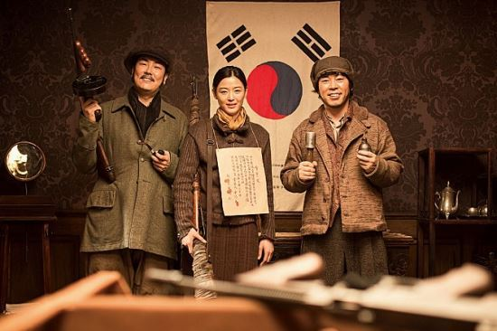

암살
개봉일: 2015년 7월 22일 감독: 최동훈 제작: 케이퍼필름 배급사: 쇼박스 제작자: 최동훈, 안수현
1933년 조국이 사라진 시대대한민국 임시정부는 일본 측에 노출되지 않은 세 명을 암살작전에 지목한다. 한국 독립군 저격수 안옥윤, 신흥무관학교 출신 속사포, 폭탄 전문가 황덕삼!김구의 두터운 신임을 받는 임시정부 경무국 대장 염석진은 이들을 찾아 나서기 시작한다.암살단의 타깃은 조선주둔군 사령관 카와구치 마모루와 친일파 강인국.한편, 누군가에게 거액의 의뢰를 받은 청부살인업자 하와이 피스톨이 암살단의 뒤를 쫓는데... 친일파 암살작전을 둘러싼 이들의 예측할 수 없는 운명이 펼쳐진다!
#대한민국_임시정부